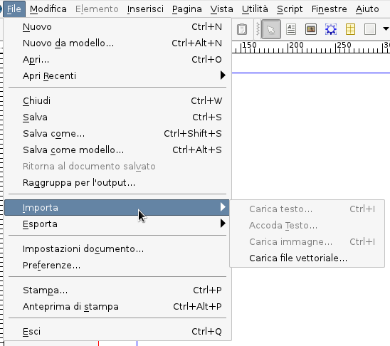

e formati vettoriali più avanzati (in basso: SVG ed EPS),
visualizzati in Scribus a un livello di ingrandimento del 3000 %
Come avete imparato, il desktop publishing consiste nell'assemblare dei contenuti dando loro un aspetto gradevole. Quindi, importare i contenuti è una parte importante dell'organizzazione del lavoro. L'obiettivo di questo capitolo è di aiutarvi a inserire contenuti esterni nel vostro documento nel modo più efficiente, e inoltre di aiutarvi ad evitare errori, sia da parte vostra sia da parte dei vostri collaboratori.
Se create un nuovo documento vuoto, e tentate di usare il comando File > Importa, probabilmente otterrete risultati deludenti, a meno che non abbiate già imparato che, in generale, un dato contenuto può essere importato solo in una cornice, e la sola eccezione a questa regola generale sono i disegni vettoriali:
|  |
Inizieremo con suggerimenti sull'importazione di immagini bitmap, continueremo con quella di disegni vettoriali e finiremo con l'importazione di testo, anche se vi sono alcune sovrapposizioni tra le tre categorie.
Uno dei concetti che dovete conoscere quando lavorate con Scribus è la differenza tra un'immagine bitmap e una vettoriale. Un'immagine bitmap consiste di un numero prefissato di punti colorati (detti pixel). Questo significa (tra l'altro) che un'immagine di questo tipo ha una certa risoluzione, cioè un certo numero di punti contenuti in una'area bidimensionale (un quadrato). Di conseguenza, la risoluzione di un'immagine bitmap ha una grande influenza sulla qualità con cui è riprodotta su diversi mezzi o supporti, poiché più grande è l'area su cui è visualizzata, più grandi sono i punti che la compongono e peggiore è il risultato. Quindi la risoluzione dell'immagine è una delle cose di cui dovete tener conto quando create file destinati alla stampa commerciale.
Le immagini vettoriali, invece, utilizzano formule matematiche (geometriche) per descrivere il contenuto in termini di linee e curve, il che significa che le immagini di questo tipo (che d'ora in poi chiameremo “disegni vettoriali” o semplicemente “disegni”) possono essere ingrandite quasi illimitatamente senza perdere qualità. Ma bisogna precisare che esistono parecchi modi per descrivere le immagini con metodi geometrici, e non tutti sono equivalenti. In generale, i disegni basati sul formato PostScript (EPS, AI) offrono il modello vettoriale più sofisticato, con qualità superiore persino su supporti di dimensioni paragonabili a quelle di un intero edificio. Questo vale anche per i caratteri PostScript, compresi i caratteri OpenType. Di qualità lievemente inferiore sono i disegni SVG, e la differenza tra PostScript o SVG e formati come WMF, ODG o PICT è ancora maggiore. In molti casi, tuttavia, queste differenze di qualità sono irrilevanti, poiché possono essere percepite soltanto a livelli d'ingrandimento molto alti.
|
|
| Differenze di qualità tra formati di clipart (in alto: WMF e ODG) e formati vettoriali più avanzati (in basso: SVG ed EPS), visualizzati in Scribus a un livello di ingrandimento del 3000 % |
Se la differenza tra immagini vettoriali e bitmap non vi è ancora chiara, c'è un esempio che potete creare voi stessi. Andate su: http://www.isc.tamu.edu/~lewing/linux, prelevate il file PostScript che vi trovate, che è una versione EPS di Tux, e poi fate clic col tasto destro su una delle GIF e scaricatela. Le dimensioni dei due file sono circa le stesse. In Scribus, create un documento di due pagine; inserite la GIF in una pagina e l'EPS nell'altra, ed esportate il documento in un file PDF. Aprite questo PDF in Adobe Reader, ingrandite al 200–400 %: ora dovreste vedere la differenza …